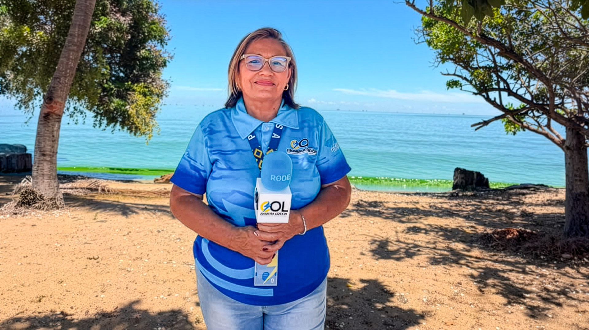
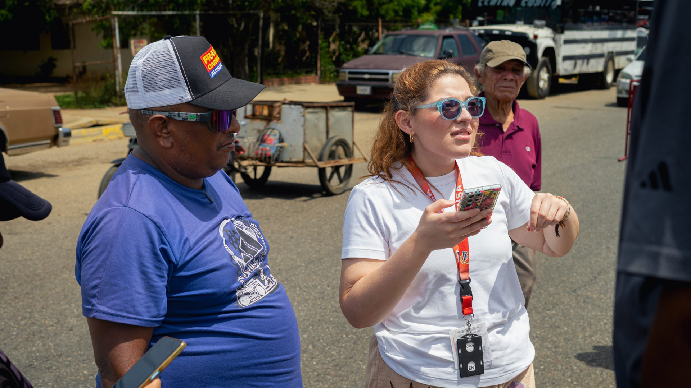
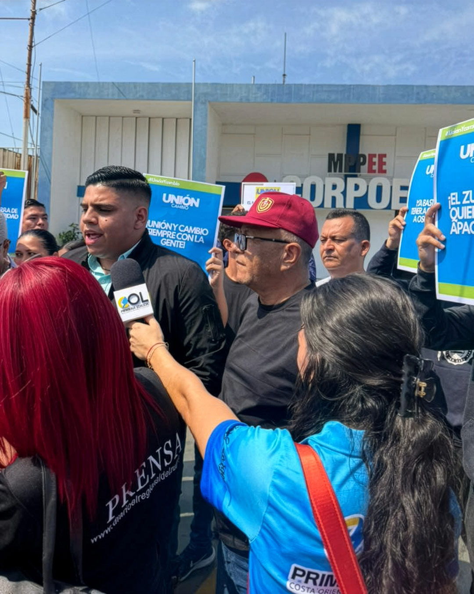
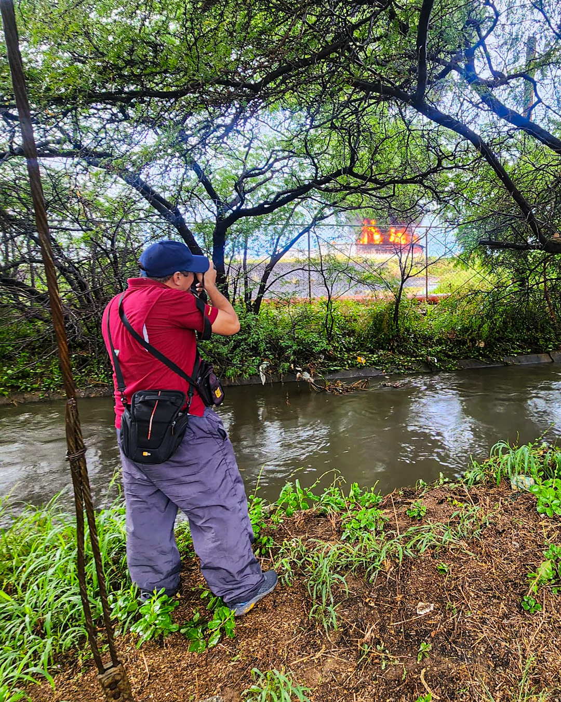
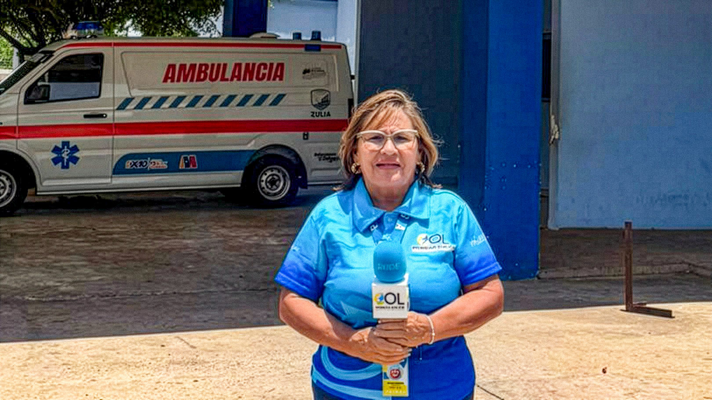
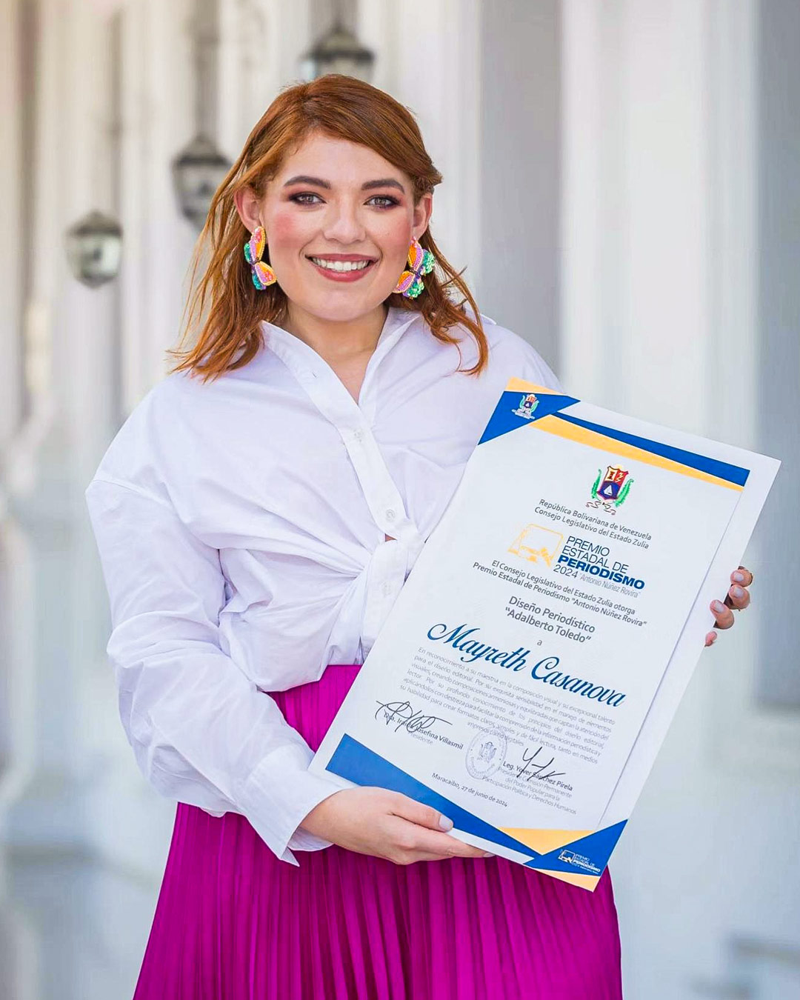

Historias – Zulia
Como embajadores de la construcción de la Costa Oriental
Mayreth Casanova no tenía dónde publicar información valiosa que la gente le hacía llegar. Había tenido que renunciar al periódico donde trabajaba, un diario venido a menos que, al poco tiempo, dejó de circular. Como respuesta a esta situación, en 2017 creóPrimera Edición Costa Oriental del Lago(COL), una cuenta en Instagram que, con el paso del tiempo, se fue convirtiendo en un medio hiperlocal que mira hacia el futuro.

Es un día cualquiera de 2026. Son las 9:00 de la noche y ya se cumplieron tres horas de racionamiento eléctrico en el centro de Cabimas, en el estado Zulia. Seguro aún faltan unas cuantas más para que vuelva el servicio. El pequeño UPS de Mayreth Casanova ya se apagó, y antes de quedarse sin batería en el teléfono, les avisa a sus compañeros de Primera Edición Costa Oriental del Lago (COL) para que ellos continúen informando en esa plataforma informativa que con mucho esfuerzo mantienen.
Cabimas es uno de los siete municipios de la Costa Oriental del Lago. Esta subregión, donde viven más de 700 mil personas, es cuna de la industria petrolera en Venezuela. Paradójicamente, aquí la supervivencia no es novedad.
Mayreth recuerda que en 2017 la Costa Oriental ya ofrecía estampas cotidianas del descalabro de una tierra que, alguna vez, fue pujante: había maquinaria pesada oxidada por doquier, grandes edificaciones abandonadas, gente migrando, escasez de alimentos, inflación.
Por aquella época Mayreth ya se había graduado de comunicación social en la Universidad Rafael Belloso Chacín. Aunque había trabajado en puestos asociados a su primera carrera —relaciones industriales—, y a pesar de haber apoyado en el negocio familiar de su padre, ella no quería dejar el periodismo, que había comenzado a ejercer como pasante en 2015 en El Regional del Zulia.

En aquel 2017, ese periódico dejó de circular por falta de planchas para imprimir. Era la segunda vez que el único diario de la Costa Oriental del Lago se quedaba sin papel. Pero no era el único obstáculo: habían tenido que disminuir el tiraje, se habían visto obligados a imprimir ediciones a blanco y negro por no tener suficiente materia prima, y hasta habían restado páginas a la sección de corte investigativo y a los suplementos informativos.
Por aquellos años, el Estado venezolano monopolizó los suministros de papel imprenta importado a medios y editoriales a través del Complejo Editorial Alfredo Maneiro. Este control era usado para la presión y censura, según denunciaron organizaciones de la sociedad civil.
Sin papel, y con salarios muy bajos, muchos de los compañeros de trabajo de Mayreth comenzaron a irse del país.
Y, aunque ella no quería, terminó renunciando.
Pero ya su identidad estaba muy relacionada con el periodismo: la gente le escribía con datos, con información. Y ella sin saber qué hacer con eso que los ciudadanos le hacían llegar. Si ya no trabajaba en un medio, ¿qué podía hacer? La pregunta le dio muchas vueltas. Durante días no dejó de conversarlo con una amiga. Tanto así que al final llegaron a una idea: abrir una cuenta en Instagram y publicar allí lo que tuviera valor periodístico. Fue un día de agosto de 2017. Puede decirse que en ese momento nació Primera Edición COL.
Quizá con el paso del tiempo esa resolución parecía obvia. ¿Por qué no se les ocurrió desde el principio? Es que eran otros años. En aquel entonces no era tan común que la ciudadanía y los periodistas usaran Instagram para informarse e informar. De hecho, en la Costa Oriental del Lago aún era costumbre esperar hasta el día siguiente para enterarse de lo que había sucedido.
Con Primera Edición COL, Mayreth quiso seguir manteniendo vivo el periodismo, que estaba tan golpeado. “No es lo mismo que El Regional”, asumió desde el principio: “serán menos publicaciones, serán textos más cortos”.
Algunos de sus excompañeros del periódico comenzaron a enviarle informaciones. Y los ciudadanos también.

El proyecto le apasionaba, pero estaba lejos de permitirle vivir de él. En parte por eso Mayreth tuvo que asumir otros compromisos profesionales. Y Primera Edición COL fue quedando en segundo plano hasta llegar a largos períodos de inactividad.
Pasó un tiempo para que, en 2019, su amiga Clide Marchelli, también periodista, la llamó desde el extrajero:
—May, ¿no te gustaría formalizar tu proyecto en una página web?
Esa pregunta fue una llamarada que encendió lo que estaba dormido. Volvió a dedicarle tiempo. Reactivó las cuentas de redes sociales, a la par que pensaba en cómo quería que fuera esa página web. En el camino, se encontró con otras grandes voluntades: Primera Edición COLse convirtió en un refugio para periodistas colaboradores que tampoco tenían dónde informar.
Fue así que apareció otra idea en el camino.
—¿Y si hacemos una revista?
A Mayreth siempre le encantaron las revistas. Las coleccionaba desde la adolescencia y siempre quiso trabajar en una, por la variedad y atemporalidad de los contenidos. El equipo de colaboradores que había reunido se emocionó. En una pequeña libretica quedó la maquetación inaugural, que luego perfeccionó Dioxelis Reyes, otra periodista venezolana que migró y que, tras una conversación vía WhatsApp sobre los detalles, aceptó asumir el diseño y la diagramación.
En diciembre de 2020, en el marco del aniversario de Cabimas, se publicó la primera edición de la revista, que llamaron Cabimitas. Así aprovecharon para darle promoción a la página web del medio de comunicación, y buscaron publicidad y pautas para pagar al personal.
Ya van siete ediciones —que cuelgan en PDF con descargas gratuitas y de las cuales han entregado algunos ejemplares impresos en la Casa de la Cultura, la Dirección de Turismo y colegios— en las que los lectores encuentran secciones con historias de quiénes son las personas que nacieron en esas tierras, por qué las ciudades se llaman así, cuándo fueron fundadas, quiénes las fundaron, eventos históricos como el “Reventón” del Barroso y celebraciones de santos como San Benito.
La publicación de cada edición está acompañada de una alianza radial para difundir micros, y pegan códigos QR en espacios públicos para que las personas descarguen la revista. Su impacto no ha pasado por alto: en los años 2022 y 2024 el Consejo Legislativo del Estado Zulia (CLEZ) les entregó la mención de Diseño Periodístico del Premio Estadal de Periodismo.
En sintonía con la esencia de la revista, en la página web cuentan historias de comercios que forman parte de la memoria colectiva y de personas que decidieron quedarse a levantar emprendimientos.

Paso a paso, Primera Edición COL ha crecido. Ahora son 10 personas, entre personal fijo, colaboradores y pasantes, quienes le dan vida. Suelen reunirse una vez a la semana para discutir y acordar pautas. Incluso, de tanto en tanto, amigos periodistas que migraron publican trabajos en el medio.
Primera Edición COL depende de la publicidad de negocios pequeños y de publicación de carteles (de terrenos, divorcios, entre otros), para pagar el hosting, el dominio y dar algunas bonificaciones a colaboradores. Otras fuentes de ingresos son las alianzas que hacen con instituciones públicas y privadas para crear contenido y la cobertura de eventos. Pero no es sencillo mantener operativo el medio.
La Costa Oriental del Lago es grande y diversa. Es complejo mantener una cobertura amplia y tener corresponsales en los diversos municipios. Sobre todo porque no pueden ofrecerles un suelo fijo. Además existen otros desafíos: abordar el municipio Miranda está marcado por la inseguridad y la violencia, lo que conlleva a que la gente no se sienta cómoda contando lo que allí ocurre. Mayreth observa que se ha ido diluyendo la costumbre de la denuncia ciudadana.

—Cada vez es más difícil que alguien diga incluso que tiene meses sin agua. Tratamos de generar confianza explicando con transparencia quiénes somos, qué hacemos, dónde lo hacemos y por qué lo hacemos —dice Mayreth.
Pero la gente nos llama, nos identifica, quiere que vayamos a su comunidad, porque les gusta nuestro trabajo —agrega Miriam, una de sus compañeras.
—Nos sentimos como unos embajadores de la construcción de la Costa Oriental del Lago. No solo es contar lo que pasa, sino también lo que hubo aquí y quiénes somos. Todo esto forma parte de nuestra identidad. Somos muy tercos, y si nos falta dinero lo sacamos de nuestros otros trabajos.
EnPrimera Edición COLse permiten vislumbrar un futuro distinto: sueñan ampliar su cobertura en el área energética, con hacer más contraloría sobre los recursos públicos, hasta crear ediciones mensuales de las revistas, que las personas puedan leerlas en las calles, y tener una sede bonita para recibir a las personas que quieran llevar información.
—Yo digo que esto es como un embarazo. Aquí está el muchacho, lo parimos y lo vamos alimentando. Lo vamos a ver crecer y después veremos los frutos —augura Miriam aún saliendo de un apagón.
